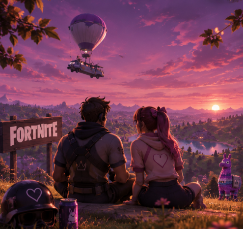

FORTNITE

جرتنا الصدف انو نتلاقى ونلعب ع فورت يوم ورا يوم صرنا دايما نفوت ونجتمع بالعبه عشان نضحك ونحكي مع بعض كنت احسه مميز بذات انو كان يلعب معنا ناس وانا افضل اكون بفريقه افضل يطلعو عشان نضل نحكي ونلعب لحالنا ومرت الايام لحد ما صرنا كثير اصدقاء انا وعبد دايما نلعب وحتى لو ما لعبنا كنا نحكي ونضحك بشات البليستيشن وبس نتلاقى! كان العذر الحكي تبعنا هو اللعبه مرقت الايام صرت احس بشعور غريب صارت البسمه تنرسم على وجهي اول ما اسمع اسمه ع السريع او اسمع انو بدنا نروح عليهم... لحد ما اجى اليوم الي خربت البلاستيشن فيه وهو اختفى وانا اختفيت! فكرت انو خلص لحظه وراحت اشي حلو بحياتي ومرق حتى انو نروحلهم كانت الزيارات نادره وبلشت تدريجيا احس انو شكلي ح ارجع استلطفه واحبه حب برئ من بعيد! لحد ما مرق تقريبا خمس اشهر واكثر ...